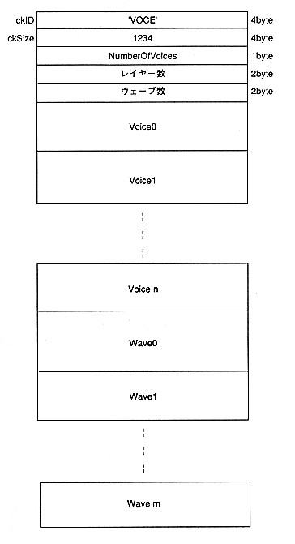

There are voice parameters and voice layers (including PCM data), and VoiceChunk is composed of headers.
The header ID “VOCE” is 4 bytes in ASCII code, followed by 4 bytes for the total number of bytes of voice data, layer data, and wave data (PCM data). After that, the number of voices (number of tones) is entered.